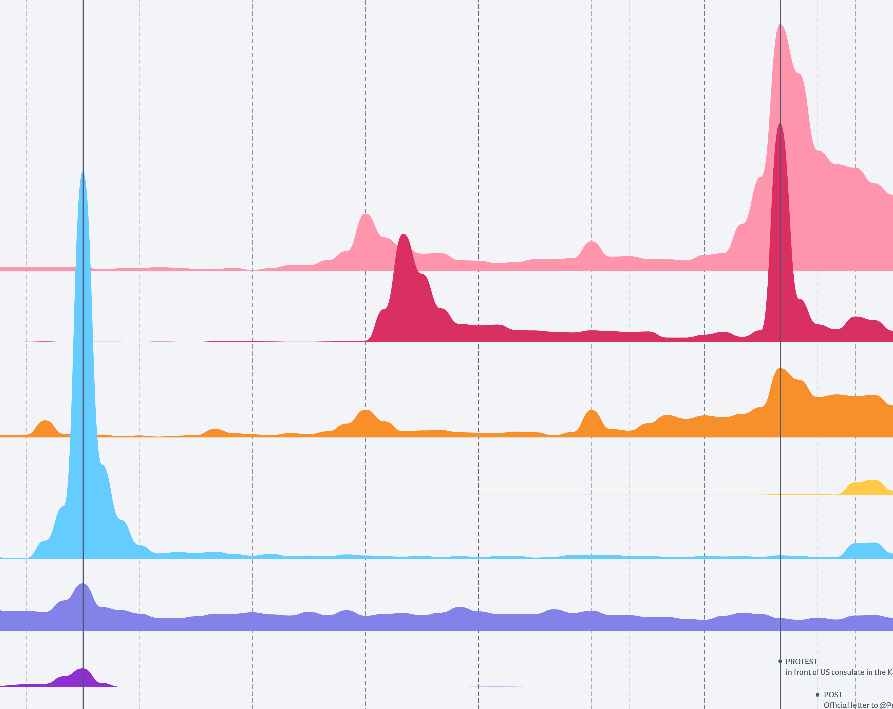
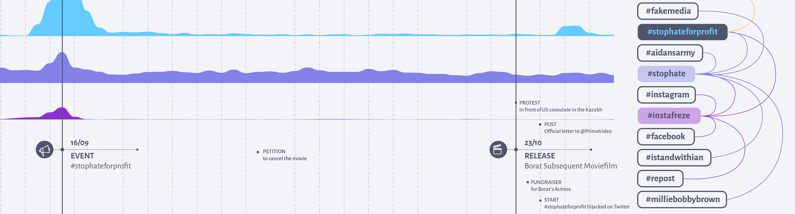
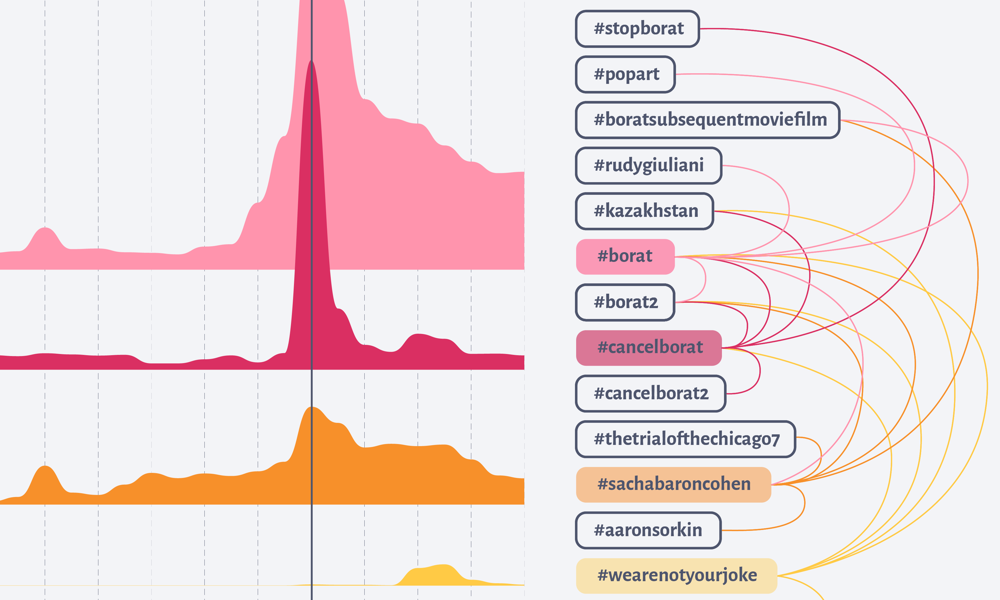
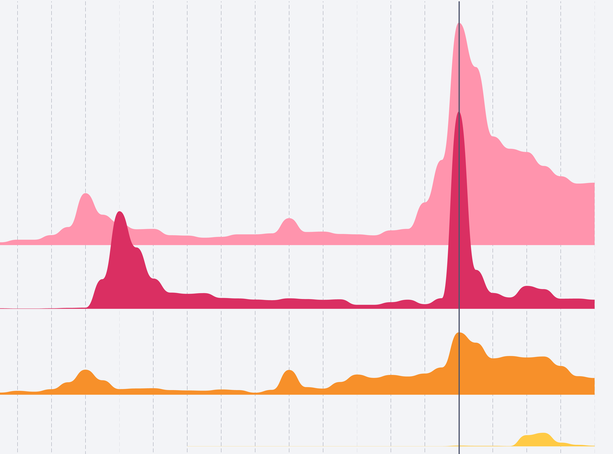

“#StopHateforProfit” was used, even by celebrities, to draw attention to the spread of hate and misinformation. However, after the release of “Borat Subsequent Moviefilm”, it was hijacked and used against one of these celebrities, Sacha Baron Cohen and his portrayal of Kazakhstan. The visualization provides insights into the association of hashtags and how events can affect their use.
At a first glance, it is possible to see that the first peak of use of “#StopHateForProfit” was aligned with the peak of “#StopHate” and “#InstaFreeze”, while the second was accompanied by “#WeAreNotYourJoke”, “#SachaBaronCohen”,”#CancelBorat” and “#Borat”. This not only suggests a co-occurrence but also that a change from a group of associations to another might indicate a shift of meaning in the use of the main hashtag.
Furthermore, “#InstaFreeze” is very specific, being used mainly along with “#StopHateForProfit” and other related hashtags, suggesting that it was specifically associated with the campaign. “#StopHate”, on the other hand, seems to have a more steady use, even though it peaked along with the others. By hovering it, it is possible to observe that it also accompanies hashtags unrelated to the campaign, and has, therefore, a broader use.
When observing the hashtags used for the hijacking, the only one that is very specific to this case is “#WeAreNotYourJoke”, not only because its curve resembles that of “#StopHateForProfit”, but also because its top associations are all related to Borat. The same cannot be said for the other three hashtags.
“#Borat” and “#SachaBaronCohen” have been constantly used for a while and peaked on the day of the movie release. Even though it is not possible to claim that they were being used by critics of the production — and “#Borat” was even associated with unrelated hashtags such as “#PopArt” — the aligned peak of “#CancelBorat” on October 23rd might indicate a political positioning.
